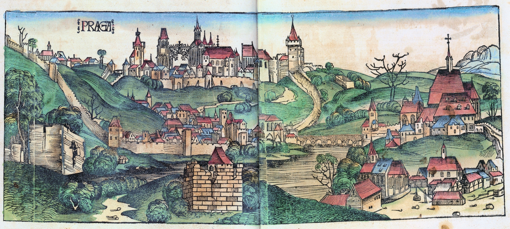

HISTORY
Prague is the capital of the Czech Republic (Czechia), a country located at the heart of Central Europe, bordered by Austria, Germany, Poland and Slovakia. In the Middle Ages, Prague became the capital of Charles IV's Bohemian Kingdom, with Prague Castle the seat of the empire. And the city has played a pivotal role in the region ever since.

(Prague in 1493)
Prague's epic history has produced a city full of beauty, of stunning Gothic, Renaissance and Baroque era buildings, and of majestic squares. In modern times, the statist communist era of the mid-20th century has given way to dynamic capitalism. Tourism has helped drive the city's regeneration, transforming grey run-down buildings into bright elegant restaurants, vibrant bars and swish hotels.

(Prague Castle in 1606)
ARCHITECTURE
Dancing House
The Dancing House is the nickname given to the Nationale-Nederlanden building. Designed in 1992 it has a non-traditional aspect that was controversial at the time because the house stands out among the Baroque, Gothic and Art Nouveau buildings.
St Nicholas Church
The imposing St Nicholas Church took almost a century to complete . Marked by a 20-metre green dome, its intense Baroque interior features a ceiling fresco by Johann Kracker and a 4,000-pipe organ once played by Mozart.
St. Vitus Cathedral
Situated at the Prague Castle, St. Vitus Cathedral is the most important and largest church in Prague. The cathedral is know to be the burial place of the former Czech kings and a home of the Czech Crown Jewels.